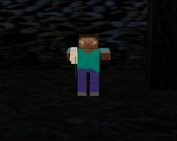

Un survival horror dans le métro mettant en scène un homme seul et amnésique face a des hordes grandissantes de zombies.
Les zombies ont toujours été présents dans la plupart des jeux de survival horror, en effet la manière de les mettre en scène dans des lieux particuliers ont toujours su nous faire frissonner au moment le moins attendu. Prenant le métro chaque matin et chaque soir, nous avons trouvé que l’atmosphère de ce lieu pourrait être propice a une histoire d’horreur. C’est de la qu’est parti l’idée qui nous offrira tant de nuits blanches durant les mois a venir, un survival horror dans le métro mettant en scène un homme amnésique face a de nombreuses hordes de zombies. Notre jeu que nous avons nommé "La Ligne 7" ne s’inscrira pas dans les meilleurs survival horrors qui existent a ce jour, toutefois nous essayerons de faire en sorte qu’il reste inscrit dans les mémoires grâce son environnement original.
Ce projet est réalisé dans le cadre de la première année de cycle préparatoire d’EPITA. Notre cahier des charges vous montrera quelles seront nos différentes étapes de développement ainsi qu’à quel résultat nous aimerions arriver a la fin du délai imparti pour faire ce projet, c’est-à-dire environ 6 mois.
On ne peut faire intervenir des zombies si il n’y a pas un moyen de foncer dans le tas et de tous les tuer. C’est pourquoi nous avons mis à votre disposition un petit arsenal pour que vous puissiez exploiter au maximum cette part du jeu, même si la plupart d’entre vous préférerons jouer la défense à l’attaque.
Un survival horror n’est défini que par son ambiance, c’est pourquoi nous miserons beaucoup dessus. Le lieu dans lequel se déroule notre jeu est propice à une ambiance frissonnante. Nos petits ajouts permettront de renforcer l’ambiance crée par le lieu, des hurlements, des apparitions inattendues ... Tout sera fait pour que vous viviez l’expérience à son paroxysme.
Un zombie c’est bête ! Dans "La ligne 7" bien que vos ennemis soient stupides ils sont plus ou moins nombreux et plein de méchantes créatures qui vous tapent ça fait mal ! ! De plus, vos munitions pourraient bien être plus rares que prévues. Mais attention, vous pourriez ne pas en revenir. Bon courage.
Vous donnant la possibilité de jouer avec un ami afin de combattre cette horde de zombie qui ne cesse de s'agrandir. Vous viverez avec votre ami une aventure exceptionnelle.
Début de la soutenance finale :
C'est parti pour la dernière soutenance
Welleow :
Hanza :
Ajouter un message